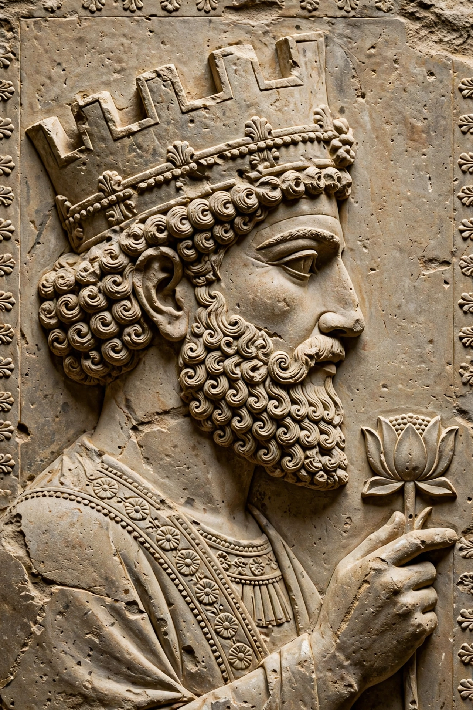

Artaxerxes II
| Artaxerxes II | |
|---|---|
 | |
| King of Kings of the Achaemenid Empire | 404–358 BC |
| Predecessor | Darius II |
| Successor | Artaxerxes III |
| Born | c. 436 BC |
| Died | 358 BC |
| House | Achaemenid |
| Father | Darius II |
| Mother | Parysatis |
Artaxerxes II Mnemon (Old Persian: Artaxšaçā; c. 436 – 358 BC) was the King of Kings of the Achaemenid Empire from 404 BC until his death in 358 BC. His reign of 46 years was the longest of any Achaemenid king. He was a son and successor of Darius II and his mother was Parysatis. The Greek sources nickname him "Mnemon" ("the remembering one") for his reputedly excellent memory.
Reign
Artaxerxes' accession was contested by his younger brother, Cyrus the Younger, who had the support of their mother Parysatis. In 401 BC Cyrus marched on Babylon with an army that included some ten thousand Greek mercenaries, but he was killed at the Battle of Cunaxa, an episode immortalised in Xenophon's Anabasis, which recounts the Greeks' retreat to the Black Sea.
Artaxerxes spent much of his reign dealing with revolts and with Sparta and Athens. He funded the Spartan fleet's enemies and then Sparta's, and in 387 BC he dictated the King's Peace (Peace of Antalcidas), which ended the Corinthian War on terms favourable to Persia and recognised Persian control of the Greek cities of Asia Minor. In the 360s BC he faced the so-called Great Satraps' Revolt in the western provinces and repeated failures to reconquer Egypt, which had been independent since 404 BC.
Building and religion
Artaxerxes undertook major building works at Susa and Ecbatana, and his inscriptions are among the first Achaemenid royal texts to invoke the gods Mithra and Anahita alongside Ahura Mazda. He is sometimes identified with the king Ahasuerus of the Book of Esther, though the identification is debated; the Artaxerxes of Ezra and Nehemiah is more often identified with Artaxerxes I.
Death and succession
Artaxerxes died in 358 BC after a reign marked by dynastic intrigue among his many sons. He was succeeded by his son Artaxerxes III.
See also
This article is a recreation written from memory for the muse-webcrawl project.